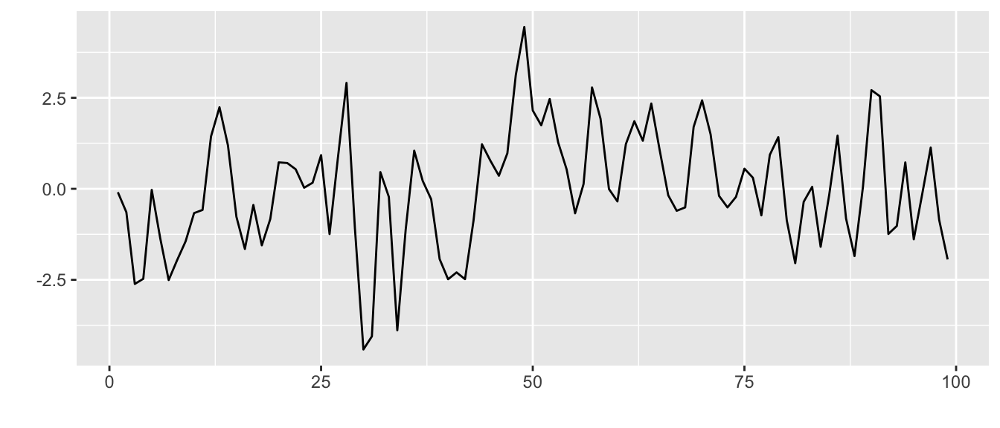

3 Modélisation aléatoire des séries temporelles
\[ \newcommand{\N}{\mathbb{N}} \newcommand{\Z}{\mathbb{Z}} \newcommand{\R}{\mathbb{R}} \newcommand{\E}{\mathbb{E}} \newcommand{\C}{\text{Cov}} \newcommand{\V}{\mathrm{Var}} \]
Dans la suite du cours, nous allons aller vers une modélisation aléatoire des séries temporelles. Une série temporelle sera vue comme une réalisation d’un processus stochastique avec certaines propriétés. Ce chapitre pose donc les définitions et propriétés importantes pour la suite autour des notions de processus du second ordre et de processus stationnaire.
3.1 Processus stochastiques
3.1.1 Définition
Definition 3.1 On appelle processus stochastique toute famille de variables aléatoires (v.a.) \((X_t)_{t\in T}\) d’un espace probabilisé \((\Omega,\mathcal A, P)\) vers un espace probabilisable \((E, \mathcal E)\) \[ \forall t\in T,\ X_t\text{ est une v.a. de } (\Omega,\mathcal A, P) \text{ vers }(E, \mathcal E). \]
L’ensemble \(T\) est appelé espace des temps et \(E\) espace des états. Chacun de ces espaces peut être discret ou continu.
Pour \(\omega\in \Omega\), on appelle trajectoire du processus la fonction (déterministe) : \[ t\mapsto X_t(\omega). \]
Dans ce cours, les séries temporelles sont vues comme des réalisations d’un processus stochastique à espace des temps discret, à savoir \(T=\N\), ou pour des raisons mathématiques \(T=\Z\). Elles ne sont observées que sur un intervalle de temps fini (on observe qu’une partie de la trajectoire du processus). En général, on considère \(E=\R\) comme espace des états et la tribu borélienne \(\mathcal E=\mathcal B_{\R}\).
Dans ce cours on n’abordera pas les processus spatiaux (\(\mbox{dim}(T)\geq 2\)), ni les séries temporelles multivariées (\(E=\R^n\)).
3.1.2 Premiers exemples de processus
3.1.2.1 Bruit blanc fort / faible
Definition 3.2 Un bruit blanc fort est une suite de variables indépendantes et identiquement distribuées (i.i.d.) \((X_t)_{t\in T}\) centrées et de variance \(\sigma^2\).
On note \((X_t)_{t\in T} \sim \text{IID}(0,\sigma^2)\).
Dans le cas d’un bruit blanc fort, il n’y a aucun dépendance entre les observations. En particulier, la connaissance de \(X_1,\ldots,X_n\) n’informe en rien sur la valeur (future) de \(X_{n+h}\). Si la loi commune des v.a. est gaussienne, on parle de bruit blanc gaussien (la Figure 3.1 donne un exemple de simulation d’une partie de trajectoire).
Definition 3.3 On appelle bruit blanc gaussien, tout bruit blanc fort pour lequel la loi commune des v.a.r. \((X_t)_{t\in T}\) est une \(\mathcal N(0,\sigma^2)\).
L’hypothèse d’i.i.d est très forte, on peut considérer une version faible d’un bruit blanc en ne demandant que la non-corrélation.
Definition 3.4 On appelle bruit blanc faible toute suite de v.a.r. \((X_t)_{t\in T}\)
- centrées et de variance \(\sigma^2\)
- non corrélées
On note \((X_t)_{t\in T} \sim \text{WN}(0,\sigma^2)\)
En tant que tels, ces processus n’ont pas d’intéret direct pour un objectif de prévision. Mais nous verrons qu’ils jouent un rôle important dans la modélisation de séries temporelles plus complexes.
3.1.2.2 Marche aléatoire
A partir d’un bruit blanc fort, on peut construire une marche aléatoire.
Definition 3.5 Une marche aléatoire \((S_t)_{t\in \mathbb N}\) est obtenue par \[ S_t=X_1+\ldots+X_t,\ \ \forall t\in \mathbb{N} \] où \((X_t)_{t\in \mathbb N}\) est un bruit blanc fort.
Si ce dernier est un processus binaire (\(\mathbb{P}(X_t=1)=\mathbb{P}(X_t=-1)=\frac 1 2\)) alors la marche aléatoire \((S_t)_{t\in \mathbb N}\) est dite symétrique simple.
La Figure 3.2 montre des exemples de trajectoires de marches aléatoires.
3.1.2.3 Processus gaussien
Definition 3.6 Un processus gaussien à temps discret \((X_t)_{t\in \mathbb Z}\) est une série temporelle telle que la loi de n’importe quel vecteur extrait est gaussien \[ \forall n\in \N^*, \forall (t_1,\ldots,t_n)\in \Z^n : (X_{t_1},\ldots,X_{t_n}) \text{ est un vecteur gaussien.} \]
Un bruit blanc gaussien est donc un processus gaussien.
3.1.2.4 Processus MA(1)
Definition 3.7 On appelle processus moyenne mobile d’ordre 1 toute série temporelle \((X_t)_{t\in \mathbb Z}\) définie par : \[ X_t=\varepsilon_t+\theta\ \varepsilon_{t-1},\ \forall t\in \mathbb Z, \] où \((\varepsilon_t)_{t\in \mathbb Z}\sim \text{WN}(0,\sigma^2)\) et \(\theta \in \mathbb R\).
On note \((X_t)_{t\in \mathbb Z}\sim\)MA(1).
La Figure 3.3 donne des exemples de trajectoires de processus MA(1). Cette notion de processus moyenne mobile sera étendue à des ordres supérieurs et fera l’objet d’une étude approfondie dans la Section 5.3 du Chapter 5.

3.1.2.5 Processus AR(1)
Definition 3.8 On appelle processus autorégressif d’ordre 1 toute série temporelle \((X_t)_{t\in \mathbb Z}\) définie par : \[ X_t=\varphi_0+\varphi_1X_{t-1}+ \varepsilon_t,\ \forall t\in \mathbb Z, \] où \((\varepsilon_t)_{t\in \mathbb Z}\sim \text{WN}(0,\sigma^2)\) et \((\varphi_0,\varphi_1) \in \mathbb R^2\).
On note \((X_t)_{t\in \mathbb Z}\sim\)AR(1).
La Figure 3.4 donne des exemples de trajectoires de processus AR(1). Cette notion de processus autorégressif sera étendue à des ordres supérieurs et fera l’objet d’une étude approfondie dans la Section 5.2 du Chapter 5.
3.2 Rappels sur l’espace \(L^2\) et les processus du second ordre
3.2.1 Espace \(L^2\)
Definition 3.9 On dit qu’une v.a.r. \(X\) est dans l’espace \(L^2(\Omega, \mathcal A, P)\) si l’on a \(\E[X^2]<+\infty.\)
Cet espace \(L^2(\Omega, \mathcal A, P)\) est un espace de Hilbert muni du produit scalaire \[ \langle X,Y\rangle_{L^2}=\E[XY] \] et de la norme \[ ||X||_{L^2}=\sqrt{\E[X^2]}. \]
Dans cet espace \(L^2\), on a donc que \(X\) et \(Y\) sont orthogonaux (\(X\perp Y\)) si \(\E[XY]=0\). Si de plus les v.a. \(X\) et \(Y\) sont centrées, cela revient à avoir \(\C(X,Y)=0\).
Theorem 3.1 (Inégalité de Cauchy-Schwarz) Si \(X\) et \(Y\) sont deux v.a. dans \(L^2(\Omega, \mathcal A, P)\) alors la v.a. \(XY\) est dans \(L^1(\Omega, \mathcal A, P)\) et on a : \[||XY||_{L^1}=\E[\ |XY|\ ]\leq ||X||_{L^2}||Y||_{L^2}.\]
Definition 3.10 Un processus \((X_t)_{t\in T}\) est dit du second ordre si la v.a. \(X_t\) est dans \(L^2(\Omega, \mathcal A, P)\) pour tout \(t\) dans \(T\).
3.2.2 Convergence dans \(L^2\)
Definition 3.11 Soient \((X_n)_{n\in \N}\) une suite de v.a. dans \(L^2(\Omega, \mathcal A, P)\) et \(X\) une v.a. dans \(L^2(\Omega, \mathcal A, P)\). On dit que \((X_n)_{n\in \N}\) converge dans \(L^2\) vers \(X\) si l’on a : \[ \lim_{n\to +\infty}||X_n-X||_{L^2}=0. \] Notation : \(X_n\underset{n\to +\infty}{\overset{L^2}{\longrightarrow}}X\)
La proposition suivante nous sera très utile dans la suite pour autoriser l’inversion entre le signe somme et l’espérance.
Proposition 3.1 Si \(\underset{i=0}{\stackrel{n}{\sum}}X_i\) converge dans \(L^2\) vers \(\underset{i=0}{\stackrel{+\infty}{\sum}}X_i\) alors on a \[ \E \left[ \underset{i=0}{\stackrel{+\infty}{\sum}}X_i \right]=\underset{i=0}{\stackrel{+\infty}{\sum}} \E[X_i]. \]
La Proposition 3.1 reste valable pour une série indexée dans les deux directions :
si \(\underset{i=-m}{\stackrel{n}{\sum}}X_i\) converge dans \(L^2\) vers \(\underset{i=-\infty}{\stackrel{+\infty}{\sum}}X_i\) quand \(n\) et \(m\) tendent vers \(+\infty\), on a \[ \E \left[ \sum_{i=-\infty}^{+\infty}X_i \right]=\sum_{i=-\infty}^{+\infty} \E[X_i]. \]
Proposition 3.2 Si les séries \(\underset{i=0}{\stackrel{n}{\sum}}X_i\) et \(\underset{j=0}{\stackrel{n}{\sum}}Y_j\) convergent dans \(L^2\) vers \(\underset{i=0}{\stackrel{+\infty}{\sum}}X_i\) et \(\underset{j=0}{\stackrel{+\infty}{\sum}}Y_j\) respectivement alors on a \[ \E \left[ \sum_{i=0}^{+\infty}X_i \cdot \sum_{j=0}^{+\infty}Y_j \right]=\sum_{i=0}^{+\infty}\sum_{j=0}^{+\infty} \E[X_iY_j]. \]
Corollary 3.1 Si les séries \(\underset{i=0}{\stackrel{n}{\sum}}X_i\) et \(\underset{j=0}{\stackrel{n}{\sum}}Y_j\) convergent dans \(L^2\) vers \(\underset{i=0}{\stackrel{+\infty}{\sum}}X_i\) et \(\underset{j=0}{\stackrel{+\infty}{\sum}}Y_j\) respectivement alors on a \[ \C \left( \sum_{i=0}^{+\infty}X_i , \sum_{j=0}^{+\infty}Y_j \right)=\sum_{i=0}^{+\infty}\sum_{j=0}^{+\infty} \C (X_i,Y_j). \]
3.2.3 Projection orthogonale
Les projections dans l’espace \(L^2\) s’appuient sur la propriété d’Hilbert de cet espace. Rappelons d’abord la définition d’un sous-espace vectoriel fermé d’un espace de Hilbert dans notre cadre.
Definition 3.12 Un sous-espace vectoriel \(\mathcal H\) de l’espace \(L^2 (\Omega,\mathcal A,P)\) est dit fermé s’il contient toutes ses limites \[ \left(X_n\in \mathcal H, \forall n\in \N, \text{ et } X_n\underset{n\to +\infty}{\overset{L^2}{\to}}X \right)\implies X\in \mathcal H. \]
Theorem 3.2 (Théorème de projection) Soit \(X\) une v.a. dans \(L^2(\Omega, \mathcal A, P)\) et \(\mathcal H\) un sous-espace vectoriel fermé de \(L^2(\Omega, \mathcal A, P)\). Il existe alors une unique v.a. \(\hat X\) dans \(\mathcal H\) telle que : \[ ||X-\hat X||_{L^2}=\min_{Y\in \mathcal H}||X-Y||_{L^2}. \]
La v.a. \(\hat X\) correspond à la projection orthogonale de \(X\) sur l’espace \(\mathcal H\) et est donc telle que : \[ \hat X \in \mathcal H \text{ et }X-\hat X\perp \mathcal H. \]
3.3 Processus stationnaires
On a vu dans le premier chapitre qu’une série temporelle peut souvent être décomposée sous la forme \[ Y_t=m_t+s_t+X_t, \] où
- \(m_t\) est une fonction à variation lente appelée tendance
- \(s_t\) une fonction périodique (de somme nulle) appelée saisonnalité.
Le terme restant, le processus \(X_t\), est donc supposé être “plus stable” dans un sens que l’on va ici définir. C’est la notion de stationnarité que l’on va expliquer dans cette section.
Definition 3.13 Un processus \((X_t)_{t\in \mathbb Z}\) est dit stationnaire au sens fort si la loi de tout vecteur \((X_{t_1},\ldots,X_{t_n})\) est invariante par translation temporelle : \[ \mathcal L (X_{t_1},\ldots,X_{t_n})=\mathcal L (X_{t_1+h},\ldots,X_{t_n+h}),\ \forall (t_1,\ldots,t_n)\in \mathbb Z^n \textrm{ et } h\in \mathbb Z. \]
Par conséquent, sous la stationnarité forte, toutes les v.a.r \(X_t\) ont la même loi. On a immédiatement qu’un bruit blanc fort est stationnaire au sens fort.
Cette hypothèse de stationnarité forte est très contraignante et peu réaliste en pratique. Aussi on va lui préférer la notion de stationnarité faible. Pour introduire la notion de stationnarité faible pour les processus du second ordre, nous avons besoin de définir tout d’abord la fonction moyenne et la fonction covariance des processus du second ordre.
Definition 3.14 Soit \((X_t)_{t\in \mathbb Z}\) un processus du second ordre.
La fonction moyenne de \((X_t)_{t\in \mathbb Z}\) est définie par \[ t\in \Z \mapsto \mathbb E[X_t]. \]
La fonction covariance de \((X_t)_{t\in \mathbb Z}\) est définie par : \[\begin{eqnarray*} (s,t)\in \mathbb Z^2 \mapsto \C(X_s,X_t) &=&\mathbb E\left[(X_s-\E[X_s])(X_t-\E[X_t]) \right]\\ &=&\langle X_s-\E[X_s],X_t-\E[X_t]\rangle_{L^2}\\ &=&\mathbb E[X_sX_t]-\mathbb E[X_s]\mathbb E[X_t] \end{eqnarray*}\]
Definition 3.15 Un processus du second ordre \((X_t)_{t\in \mathbb Z}\) est dit faiblement stationnaire si
- sa fonction moyenne est constante \(\E[X_t]=\mu_X,\ \forall t\in \mathbb Z\);
- sa fonction covariance ne dépend que de la différence en temps \[\begin{eqnarray*} \C(X_s,X_t) &=&\C(X_{s+u},X_{t+u}), \forall (s,t,u)\in \Z^3\\ &=&\C(X_0,X_{t-s})=f(t-s) \end{eqnarray*}\]
Example 3.1 (Bruit blanc fort / faible) Si le processus \((X_t)_{t\in \mathbb Z}\) est un bruit blanc fort dans \(L^2\) alors il est faiblement stationnaire puisque : \[ \mu_X(t)=0,\ \forall t\in\mathbb Z \textrm{ et } \C(X_{t+h},X_t)=\sigma^2 \mathbb{1}_{h=0} = \left\{ \begin{array}{ccc} \sigma^2&\textrm{ si }&h=0\\ 0&\textrm{ si }&h\ne 0 \end{array} \right.,\ \forall t\in\mathbb Z \]
Un bruit blanc faible \(\text{WN}(0,\sigma^2)\) est également faiblement stationnaire.
Example 3.2 (Marche aléatoire non stationnaire) Soit \((S_t)_{t\in \mathbb N}\) la marche aléatoire \(S_t = X_1+\ldots+X_t\) avec \((X_t)_{t\in\mathbb Z}\sim \text{IID}(0,\sigma^2)\) . On a \[\begin{eqnarray*} & &\mathbb E[S_t]=\mathbb E\left[ \sum_{k=1}^t X_k\right]=\sum_{k=1}^t\mathbb E[X_k]=0\\ & &\V(S_t)=\V\left(\sum_{k=1}^t X_k\right)=\sum_{k=1}^t \V(X_k)=t\sigma^2. \end{eqnarray*}\] \(\Longrightarrow\) le processus \((S_t)_{t\in \mathbb N}\) n’est pas stationnaire puisque sa variance n’est pas constante.
On peut le vérifier plus largement sur la fonction covariance : pour \(h\in\N\), \[\begin{eqnarray*} \C(S_{t+h},S_t) &=&\C(S_t+X_{t+1}+\cdots +X_{t+h},S_t)\\ &=&\V(S_t)+\sum_{k=1}^h \C(X_{t+k},S_t)=\V(S_t)=t\sigma^2. \end{eqnarray*}\]
3.4 Fonctions d’autocovariance et d’autocorrélation
3.4.1 Fonction d’autocovariance (ACVF)
Definition 3.16 Soit \((X_t)_{t\in\Z}\) un processus faiblement stationnaire.
Sa fonction d’autocovariance \(\gamma_X(\cdot)\) est la fonction définie par \[\begin{eqnarray*} \begin{array}{rcl} \gamma_X:\mathbb Z&\rightarrow & \mathbb R\\ h&\mapsto & \gamma_X(h)=\C(X_h,X_0)=\C(X_{t+h},X_t),\ \forall t. \end{array} \end{eqnarray*}\]
Le tracé de la fonction \(h\in\mathbb N \mapsto \gamma_X(h)\) est appelé autocovariogramme.
Proposition 3.3 La fonction d’autocovariance \(\gamma_X(.)\) vérifie les propriétés suivantes :
- \(\gamma_X(0)\geq 0\)
- \(|\gamma_X(h)|\leq \gamma_X (0)\) pour tout \(h\) donc l’ACVF est bornée
- \(\gamma_X(h)=\gamma_X(-h)\) pour tout \(h\) donc l’ACVF est une fonction paire
3.4.2 Fonction d’autocorrélation (ACF)
Definition 3.17 Soit \((X_t)_{t\in\Z}\) un proecssus faiblement stationnaire.
Sa fonction d’autocorrélation \(\rho_X(\cdot)\) est définie par \[\begin{eqnarray*} \begin{array}{rcl} \rho_X:\mathbb Z&\rightarrow & [-1,1]\\ h&\mapsto & \rho_X(h)=\displaystyle \frac{\gamma_X(h)}{\gamma_X(0)}=\mbox{Corr}(X_{t+h},X_t)\\ & & \\ & & =\displaystyle\frac{\C(X_{t+h},X_t)}{\sqrt{\V(X_t) \V(X_{t+h})}},\ \forall t. \end{array} \end{eqnarray*}\]
Le tracé de la fonction \(h\in\mathbb N\mapsto \rho_X(h)\) est appelé autocorrélogramme.
Ainsi les fonctions ACVF et ACF mesurent le degré de dépendance entre les valeurs d’une série temporelle à des instants différents. Ce sont des notions très importantes pour la suite du cours.
3.4.3 Exemples
Example 3.3 (Bruit blanc gaussien)
On considère la série \((\varepsilon_t)_{t\in T}\) avec les \(\varepsilon_t\) i.i.d \(\mathcal N(0,1)\). La trajectoire observée de cette série temporelle est représentée en Figure 3.5 (a). En traçant le nuage de points de coordonnées \((X_t,X_{t+1})\) (voir Figure 3.5 (b)), on constate qu’il n’y a pas de dépendance entre deux temps successifs. Sur l’autocorrélogramme empirique (Figure 3.5 (c)), on a un pic à 1 pour \(h=0\) et des valeurs proches de 0 pour \(h\geq 1\).
Example 3.4 (Moyenne mobile d’ordre 1 MA(1))
Soit \((X_t)_{t\in \Z}\) une série temporelle MA(1) définie par \[
X_t = \varepsilon_t + \theta\ \varepsilon_{t-1}, \forall t\in\mathbb Z \textrm{ avec } (\varepsilon_t)_t\sim \text{WN}(0,\sigma^2).
\]
C’est un processus stationnaire au sens faible car
- \(\E[X_t]=\E[\varepsilon_t] + \theta\ \E[\varepsilon_{t-1}]=0\)
- La fonction d’autocovariance vaut
On en déduit l’expression de la fonction d’autocorrélation :
\[ \rho_X(h)=\frac{\gamma_X(h)}{\gamma_X(0)} =\left\{ \begin{array}{lcc} 1& \textrm{ si } &h=0\\ \frac{\theta}{1+ \theta^2} & \textrm{ si } & |h|=1\\ 0 & \textrm{ si } &|h|\geq 2 \end{array} \right. \]
Pour illustrer, on observe la trajectoire d’une série temporelle issue du modèle suivant \[ X_t = \varepsilon_t -0.7 \varepsilon_{t-1}, \forall t\in\mathbb Z \textrm{ avec } (\varepsilon_t)_t\sim \text{WN}(0,0.5^2) \]
La trajectoire observée de cette série temporelle est représentée en Figure 3.6 (a). On constate une dépendance linéaire quand on trace le nuage de points de coordonnées \((X_t,X_{t+1})\) (voir Figure 3.6 (b)) et aucune pour le nuage de points de coordonnées \((X_t,X_{t+2})\) (voir Figure 3.6 (c)). Sur l’autocorrélogramme empirique (Figure 3.6 (d)), on a un pic à 1 pour \(h=0\), un pic proche de \(\frac{-0.7}{1 + (-0.7)^2}\approx -0.47\) pour \(h=1\), et des valeurs proches de 0 pour \(h\geq 2\).
Comme second exemple, on observe la trajectoire d’une série temporelle issue du modèle suivant \[ X_t = \varepsilon_t +\varepsilon_{t-1}, \forall t\in\mathbb Z \textrm{ avec } (\varepsilon_t)_t\sim \text{WN}(0,0.5^2) \] La trajectoire observée de cette série temporelle est représentée en Figure 3.7 (a). On constate une dépendance linéaire avec pente positive quand on trace le nuage de points de coordonnées \((X_t,X_{t+1})\) (voir Figure 3.7 (b)) et aucune pour le nuage de points de coordonnées \((X_t,X_{t+2})\) (voir Figure 3.7 (c)). Sur l’autocorrélogramme empirique (Figure 3.7 (d)), on a un pic à 1 pour \(h=0\), un pic proche de \(\frac{1}{1 + (1)^2}=\frac 1 2\) pour \(h=1\), et des valeurs proches de 0 pour \(h\geq 2\).

Example 3.5 (Processus autorégressif d’ordre 1 AR(1))
Soit \((X_t)_{t\in\mathbb Z}\) le processus stationnaire défini par \[ X_t=\phi X_{t-1}+\varepsilon_t,\ \forall t\in \mathbb Z \textrm{ avec }(\varepsilon_t)\sim \text{WN}(0,\sigma^2) \textrm{ et } 0<|\phi|<1 \]
On suppose que le processus \((\varepsilon_t)_{t\in\mathbb Z}\) est tel que, pour tout \(t\), \[\begin{eqnarray*} \C(\varepsilon_t,X_s)=0, \ \forall s<t &\iff& \langle \varepsilon_t,X_s\rangle_{L^2}=0, \ \forall s<t\\ &\iff& \varepsilon_t \bot \mathcal{H}_{t-1}:=sp\{X_{t-1},X_{t-2},\ldots\}. \end{eqnarray*}\]
Le processus \(X_t\) est centré car : \(\E[X_t] = \phi \E[X_{t-1}] + \E[\varepsilon_t] = \phi \mathbb E [X_{t-1}] + 0\). Or le processus \((X_t)_{t\in\Z}\) est stationnaire donc \(\E[X_t]=\E[X_{t-1}]\). On obtient donc que \(\E[X_t] = \phi \mathbb E [X_{t}]\) d’où \(\mathbb E[X_t] =0\) car \(\phi\neq 0\).
Déterminons maintenant la fonction d’autocovariance / autocorrélation : soit \(h\in\mathbb N\), \[\begin{eqnarray*} \gamma_X(h)=\C(X_t,X_{t+h}) &=&\mathbb E[X_tX_{t+h}]\\ &=&\mathbb E[\left(\phi X_{t+h-1}+\varepsilon_{t+h}\right)X_t]\\ &=&\phi \C(X_{t+h-1},X_t)+ \C(\varepsilon_{t+h},X_t). \end{eqnarray*}\]
Or par hypothèse, \(\varepsilon_t \bot \mathcal{H}_{t-1}\) donc \[ \gamma_X(h)=\phi\gamma_X(h-1)=\cdots=\phi^h\gamma_X(0). \]
D’où \(\rho_X(h)=\frac{\gamma_X(h)}{\gamma_X(0)}=\phi^h,\ \forall h>0\). Finalement, comme \(\gamma_X(h)= \gamma_X(-h)\), \(\rho_X(h)= \phi^{|h|},\ \forall h\in \mathbb Z.\)
Pour illustrer ce résultat, on observe une série temporelle simulée selon \[ X_t = 0.8 X_{t-1} +\varepsilon_{t}, \forall t\in\mathbb Z \textrm{ avec } (\varepsilon_t)_t\sim \text{WN}(0,0.5^2) \]
La trajectoire observée de cette série temporelle est représentée en Figure 3.8 (a). On constate des dépendances linéaires quand on trace le nuage de points de coordonnées \((X_t,X_{t+1})\) (voir Figure 3.8 (b)) et le nuage de points de coordonnées \((X_t,X_{t+2})\) (voir Figure 3.8 (c)). Sur l’autocorrélogramme empirique (Figure 3.8 (d)), on constate la décroissance exponentielle vers 0 (\(\rho_X(h) = e^{|h| \ln(0.8)}\approx e^{-0.22\ |h|}\)).

Pour la seconde illustration, on considère la série temporelle \[ X_t = -0.8 X_{t-1} +\varepsilon_{t}, \forall t\in\mathbb Z \textrm{ avec } (\varepsilon_t)_t\sim \text{WN}(0,0.5^2) \] La trajectoire observée de cette série temporelle est représentée en Figure 3.9 (a). On constate des dépendances linéaires quand on trace le nuage de points de coordonnées \((X_t,X_{t+1})\) (voir Figure 3.9 (b)) et le nuage de points de coordonnées \((X_t,X_{t+2})\) (voir Figure 3.9 (c)), avec des pentes qui changent de signe car \(\phi<0\). Sur l’autocorrélogramme empirique (Figure 3.9 (d)), on constate la décroissance vers 0 avec alternance du signe (\(\rho_X(h) = (-1)^{|h|} e^{|h| \ln(0.8)}\approx (-1)^{|h|} e^{-0.22\ |h|}\)).
3.4.4 CNS pour une fonction d’autocovariance
Definition 3.18 Une fonction \(K: \mathbb Z \rightarrow \mathbb R\) est dite semi-définie positive si l’on a \[ \sum_{i,j=1}^na_ia_jK(i-j)\geq 0, \] pour tout \(n\) et tout vecteur \((a_1,\ldots,a_n)\in\R^n\).
Theorem 3.3 Une fonction réelle définie sur \(\Z\) est une fonction d’autocovariance d’une série temporelle si et seulement si elle est paire et semi-définie positive.
Remarque : Pour la fonction d’autocorrélation, on a les mêmes propriétés + \(\rho_X(0)=1\).
3.4.5 Matrice d’autocorrélation
Definition 3.19 Soit \((X_t)_{t\in \Z}\) est un processus stationnaire du second ordre. On appelle matrice d’autocorrélation de \((X_t,\ldots,X_{t+h-1})\) pour \(h\in\N^*\) \[ R_{X,h}=\left( \begin{array}{cccc} 1 & \rho_X(1) & \cdots & \rho_X(h-1) \\ \rho_X(1) &1 & \ddots &\rho_X(h-2) \\ \vdots & \ddots & \ddots &\vdots\\ \rho_X(h-1) &\cdots&\rho_X(1)& 1 \end{array} \right). \]
Cette matrice d’autocorrélation est une matrice de Toeplitz (matrice à diagonales constantes) et
\[ R_{X,h}=\left( \begin{array}{ccc|c} & & & \rho_X(h-1) \\ &R_{X,h-1} & &\rho_X(h-2) \\ & & &\vdots\\ & & &\rho_X(1)\\ \hline \rho_X(h-1) &\cdots&\rho_X(1)& 1 \end{array} \right) \]
La fonction d’autocorrélation vérifie la même propriété de semi-définie positivité que la fonction d’autocovariance. La proposition suivante donne en outre une condition équivalente en terme du déterminant des matrices \(R_{X,h}\).
Proposition 3.4 La fonction d’autocorrélation est également une fonction semi-définie positive. D’après le critère de Sylvester, cette propriété est équivalente à la positivité de tous les déterminants des mineurs principaux \[ \mbox{det}(R_{X,h})\geq 0,\ \textrm{ pour tout } h \]
Cette propriété fixe une infinité de contraintes sur les corrélations
- \(\mbox{det}(R_{X,2})\geq 0\) donne \(\rho_X^2(1)\leq 1\)
- \(\mbox{det}(R_{X,3})\geq 0\) donne \((1-\rho_X(2))(1+\rho_X(2)-2\rho_X^2(1))\geq 0\), et donc \(1+\rho_X(2)-2\rho_X^2(1)\geq 0\),
- et ainsi de suite…
3.4.6 Premiers pas vers les processus ARMA
Les processus ARMA seront au coeur du Chapter 5. Nous les abordons ici très rapidement pour parler de filtrage linéaire.
Dans la modélisation ARMA, on utilise un opérateur de série en \(B\) de coefficients \((\psi_j)_{j\in \Z}\) \[ \psi(B)=\sum_{j\in \Z}\psi_j B^j \]
que l’on applique sur un processus stationnaire. On parle alors de filtrage linéaire. Si \((X_t)_{t\in \Z}\) est une série temporelle stationnaire alors \[ Y_t=\psi(B) X_t = \sum_{j\in\mathbb Z}\psi_j X_{t-j} \]
On reviendra dans le Chapter 5 sur cette notion de série en \(B\) pour mieux la définir et établir des résultats. Nous allons ici nous intéresser à la propriété de maintien de la propriété de stationnairité par le filtrage linéaire sous une condition de sommabilité de ses coefficients.
Proposition 3.5 (Filtrage linéaire) Soit \((X_t)_{t\in \Z}\) une série temporelle stationnaire de fonction moyenne \(\mu_X\) et de fonction d’autocovariance \(\gamma_X(\cdot)\).
Si la suite de réels \((\psi_j)_{j\in \Z}\) est sommable (\(\sum_{j=-\infty}^{+\infty}|\psi_j|<+\infty\)) alors la série \((Y_t)_{t\in \Z}\) obtenue par filtrage linéaire de \((X_t)_{t\in \Z}\), \[ Y_t=\psi(B)X_t=\sum_{j=-\infty}^{+\infty}\psi_j X_{t-j}, \] existe et est également stationnaire.
La moyenne est donnée par la relation \[ \mu_Y = \mu_X\sum_{j=-\infty}^{+\infty}\psi_j \]
et la fonction d’autocovariance vaut \[ \gamma_Y(h) =\sum_{i=-\infty}^{+\infty}\sum_{j=-\infty}^{+\infty}\psi_i\psi_j\gamma_X(h+i-j),\ \forall h\in\Z \]
Example 3.6 (Filtrage linéaire d’un bruit blanc)
Dans cet exemple, on considère que le processus initial est un bruit blanc \[
(\varepsilon_t)_{t\in\mathbb Z}\sim \text{WN}(0,\sigma^2)
\] qui est donc stationnaire.
Le processus \((Y_t)_{t\in \Z}\) défini par \[ Y_t=\sum_{j\in \Z}\psi_j\ \varepsilon_{t-j} \] avec \(\sum_{j\in \Z}|\psi_j | <+\infty\) est bien défini et stationnaire. La fonction moyenne de \((Y_t)_{t\in\Z}\) est \[ \mu_Y=\mu_\varepsilon \sum_{j\in \Z}\psi_j =0 \] et de fonction d’autocovariance \[\begin{eqnarray*} \gamma_Y(h)&=&\sum_{i\in \Z} \sum_{j\in \Z} \psi_i \psi_j \gamma_\varepsilon(h+i-j)\\ &=& \sigma^2 \sum_{i\in \Z} \sum_{j\in \Z} \psi_i \psi_j \mathbb{1}_{h+i-j=0}\\ &=&\sigma^2\ \sum_{i\in \Z} \psi_i \psi_{h+i} \end{eqnarray*}\] car \(\gamma_\varepsilon(u)= \sigma^2\ \mathbb{1}_{u = 0}\).
Et pour une somme finie ?
Soit \((\varepsilon_t)_{t\in \Z}\sim\text{WN}(0,\sigma^2)\) et le processus \((Y_t)_{t\in \Z}\) défini par \[ Y_t=\sum_{i=0}^t\varepsilon_{t-i} \]
Le processus \((Y_t)_{t\in \Z}\) existe et il est du second ordre.
Le processus reste centré \(\E[Y_t]=\underset{i=0}{\stackrel{t}{\sum}}\E[\varepsilon_{t-i}]=0.\)
Fonction de covariance : soit \(h\in\mathbb N\), \[\begin{eqnarray*} \C(Y_t,Y_{t+h}) &=&\E\left[\sum_{i=0}^t\varepsilon_{t-i}\times \sum_{j=0}^{t+h}\varepsilon_{t+h-j}\right]\\ &=&\sum_{i=0}^{t} \E[\varepsilon_i^2]=\sigma^2\ (1+t). \end{eqnarray*}\]
\(\Longrightarrow\) Le processus n’est donc pas stationnaire! Ainsi, de manière paradoxale, les sommes finies peuvent poser plus de “problèmes” que les sommes infinies !
3.5 Densité spectrale
Jusqu’ici, on a abordé les processus stationnaires du second ordre via leur représentation temporelle. On peut également s’intéresser à leur représentation dans le domaine des fréquences. On aborde alors la notion de densité spectrale qui est une fonction contenant la même information que la fonction d’autocovariance.
Definition 3.20 Soit \((X_t)_{t\in \Z}\) un processus stationnaire de fonction d’autocovariance \(\gamma_X(\cdot)\). On appelle densité spectrale, quand elle existe, la fonction \(f_X(\cdot)\) définie sur \(\R\) par \[ f_X(\omega)=\frac{1}{2\pi}\sum_{h\in \Z}\gamma_X(h)e^{-i\omega h}. \]
On peut reconnaitre que cette densité spectrale revient à la transformée de Fourier discrète de la fonction \(\gamma_X(\cdot)\) définie sur \(\Z\).
La proposition suivante donne une propriété d’existence de la densité spectrale.
Proposition 3.6 (Existence de la densité spectrale)
La densité spectrale d’un processus stationnaire \((X_t)_{t\in \Z}\) de fonction d’autocovariance \(\gamma_X(\cdot)\) existe dès que l’on a : \[
\sum_{h\in \Z}|\gamma_X(h)|<+\infty.
\]
Proposition 3.7 La densité spectrale d’un processus stationnaire \((X_t)_{t\in \Z}\) est une fonction réelle, continue, positive, paire et \(2\pi\)-périodique.
Theorem 3.4 Il est équivalent de connaître la fonction d’autocovariance ou la densité spectrale, quand elle existe, d’un processus stationnaire \((X_t)_{t\in \Z}\) :
\[ \gamma_X(h)=\int_{-\pi}^\pi f_X(\omega) \cos (\omega h )d\omega=\int_{-\pi}^\pi f_X(\omega) e^{i\omega h }d\omega. \]
Example 3.7 (Bruit blanc faible) Soit un bruit blanc faible \((\varepsilon_t)_{t\in \Z}\sim \text{WN}(0,\sigma^2)\). Rappelons que sa fonction d’autocovariance vaut \(\gamma_\varepsilon(h) = \sigma^2 \mathbb{1}_{h=0}\). Sa densité spectrale vaut donc \[ f_\varepsilon(\omega)=\frac{1}{2\pi}\sum_{h\in \Z}\gamma_\varepsilon(h)e^{-i\omega h}=\frac{\sigma^2}{2\pi},\ \forall \omega\in\R. \]
Et réciproquement tout processus stationnaire de densité spectrale constante est un bruit blanc faible.
La proposition suivante concerne la densité spectrale d’un filtrage linéaire.
Proposition 3.8
Soit \((X_t)_{t\in \Z}\) un processus stationnaire de densité spectrale \(f_X(\cdot)\). Soit \((Y_t)_{t\in \Z}\) un filtrage linéaire de la série \((X_t)_{t\in \Z}\) défini par \[
Y_t=\psi(B)X_t=\sum_{j=-\infty}^{+\infty}\psi_j X_{t-j}
\textrm{ avec }
\sum_{j=-\infty}^{+\infty}|\psi_j|<+\infty.
\] Le processus \((Y_t)_{t\in \Z}\) est donc stationnaire de densité spectrale \[
\forall \omega\in\R,\ f_Y(\omega)=f_X(\omega)\left|\sum_{j=-\infty}^{+\infty} \psi_j e^{-i\omega j}\right|^2.
\]
Example 3.8 (Densité spectrale du filtrage linéaire d’un bruit blanc)
Soit \((\varepsilon_t)_{t\in \Z}\sim \text{WN}(0,\sigma^2)\) et \((Y_t)_{t\in \Z}\) le filtrage linéaire de ce bruit blanc défini par \[ Y_t=\sum_{j\in \Z}\psi_j \varepsilon_{t-j} \] avec \(\sum_{j\in \Z}|\psi_j | <+\infty\). D’après la Proposition 3.8, la densité spectrale de ce processus est alors égale à : \[ f_Y(\omega)=f_\varepsilon (\omega) \cdot \left|\sum_{j=-\infty}^{+\infty} \psi_j e^{-i\omega j}\right|^2=\frac{\sigma^2}{2\pi}\left|\sum_{j=-\infty}^{+\infty} \psi_j e^{-i\omega j}\right|^2. \]